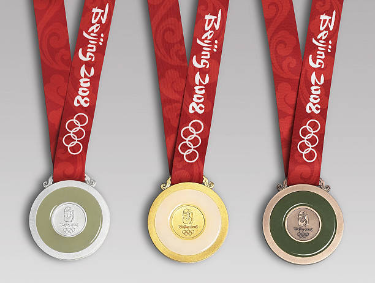

The Olympic Medal Table of Beijing 2022 Winter Olympic Games.
Higher, faster, stronger!
The 2022 Winter Olympics medal table is a list of National Olympic Committees ranked by the number of medals won during the 2022 Winter Olympics, held in Beijing, China, on 4–20 February 2022.
Medal Table
| Rank |
Country |
Gold |
Silver |
Bronze |
Total |
| 1 |
Norway |
16 |
8 |
13 |
37 |
| 2 |
Germany |
12 |
10 |
5 |
27 |
| 3 |
China |
9 |
4 |
2 |
15 |
| 4 |
U.S.A |
8 |
10 |
7 |
25 |
| 5 |
Sweden |
8 |
5 |
5 |
18 |
Reference resource
Norway was the most successful nation, both in terms of gold medals (16) and total medals (37). By winning its 15th gold medal, Norway broke the record of most golds at a single Winter Olympic Games,[3] beating the joint record of Norway in 2018, Germany in 2018 and Canada in 2010 – albeit the number of gold medals available has increased over time, from 78 gold medals in 2002 to 109 in 2022.
Germany achieved a podium sweep in bobsleigh, in the men's two-man.[4]
The host nation, China, won nine golds and a total of 15 medals, delivering its best Winter Olympic performance, and ranking in the top three in a provisional way for the first time.